Ly Quoc Su street which connects an iconic cathedral with Hang Bong Street offers many variations of a Hanoi dining theme.
A house's balcony on Ly Quoc Su street. Photo by VnExpress/Dai Trang
"How about going to the Cathedral area?"
This is my stock response when asked to suggest a "very Hanoian dining place."
I might well be wrong, but the options around the iconic St. Joseph's Cathedral in Hanoi, on main streets and alleys off them are my automatic choice for some authentic Vietnamese food that have never failed me, so far.
This is true despite how touristy the area has become in the last few years, which is not a bad thing. Just makes my special places "hidden treasures".
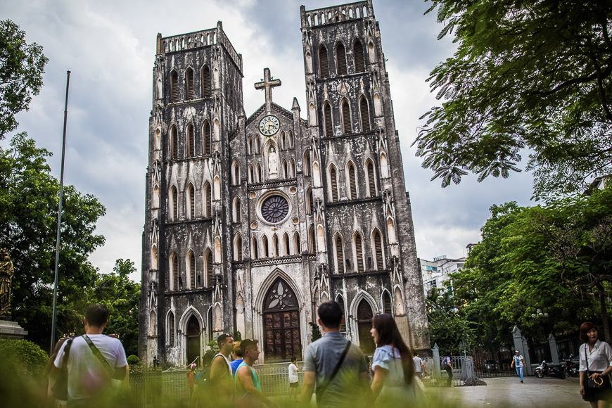
St. Joseph's Cathedral (Hanoi) - Attraction in Hanoi, Vietnam
Amidst all the visitors taking endless selfies in front of the cathedral which is considered one of the city's iconic landscapes, the Hanoian in me thrills to the sight of "Hanoi" written in green on a second floor balcony on the street.
That is Hanoi to me. As a millennial, I am happy to see changes in the capital city, and the blending of the modern with the traditional.
One of the best ways to see this interesting mix is through food. As fancier and fancier restaurants and coffee shops open in the area, restaurants and stalls serving typical Hanoi dishes are holding their own.
My’s chicken congee
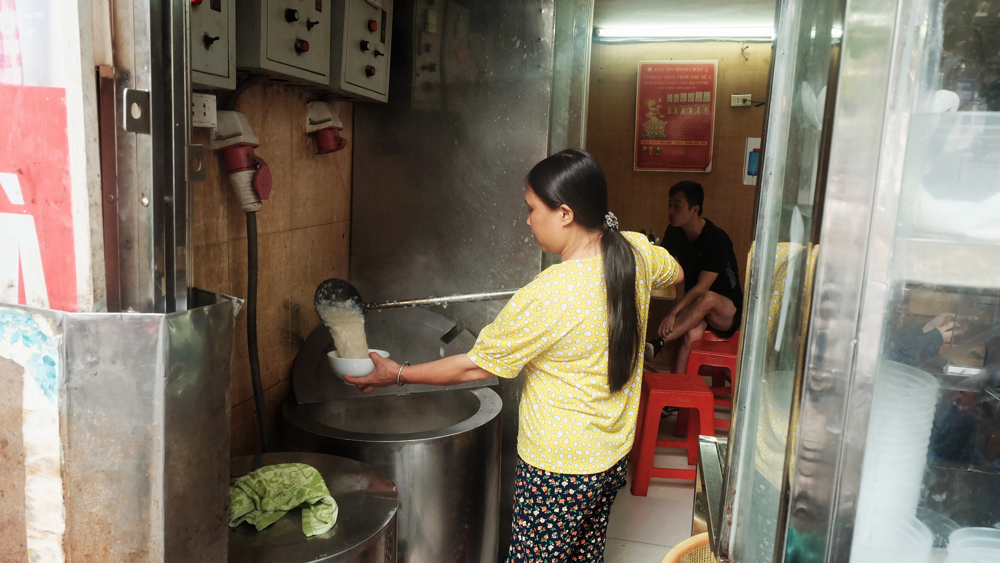
The cook ladled congee into a bowl. Photo by VnExpress/Dai Trang
For me, My's place, a restaurant serving chicken congee, Chao Ga Ba My (My’s chicken congee) is a frequent food stop in the area.
The restaurant is a small room on the first floor of an old house at 47 Ly Quoc Su. It has been around for over four decades, said Hien, the cook. After the original chef, My, 86 now, retired, Hien has been hired to carry on her legacy.
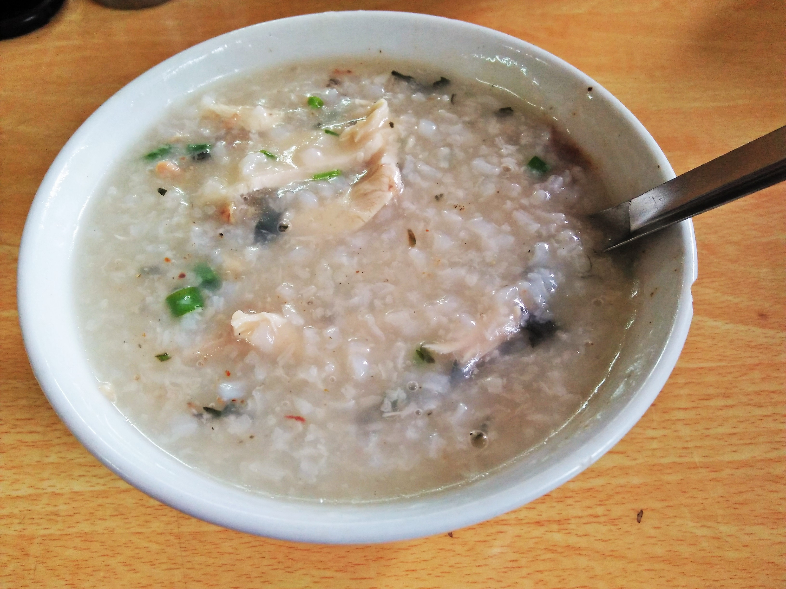
A bowl of chicken congee at My's restaurant. Photo by VnExpress/Bao Ngoc
A bowl of congee is a common breakfast option for Hanoians. On a chilly morning, a bowl of smooth rice congee, cooked in nutritious chicken bone broth and the meat of chicken gets them ready for a day of hard work.
I got the bowl of congee and let the warmth of the rice broth fill my empty stomach. It was slightly pricey at VND40,000 ($1.71), but well worth it. It makes you want to feel hungry again.
Goc Da restaurant - Fried cakes and rolls
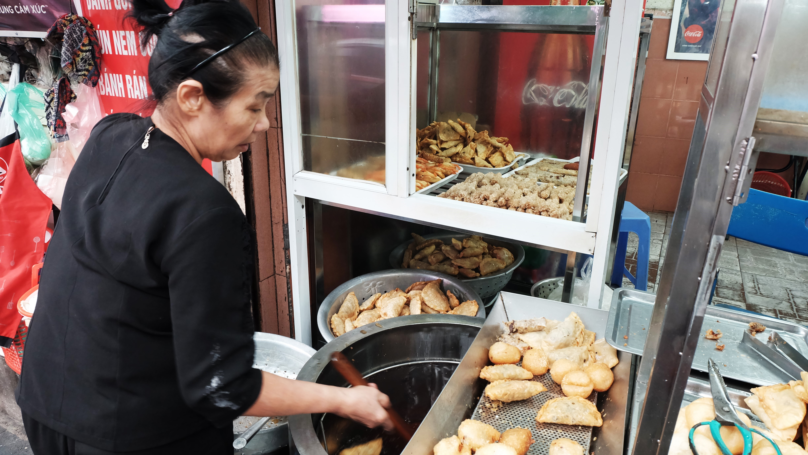
The cook fried the cakes in a big pot of boiling oil. Photo by VnExpress/Dai Trang
Quan Goc Da (Banyan Tree Restaurant), or a lean room under the shade of a banyan tree at 52 Ly Quoc Su Street, serves a wide range of fried specialties like shrimp cake, pillow cake and crab rolls.
The restaurant operates in a narrow room about 2.5 meters wide. Sitting inside still feels like sitting in the open, since the seats are all close to the entrance.
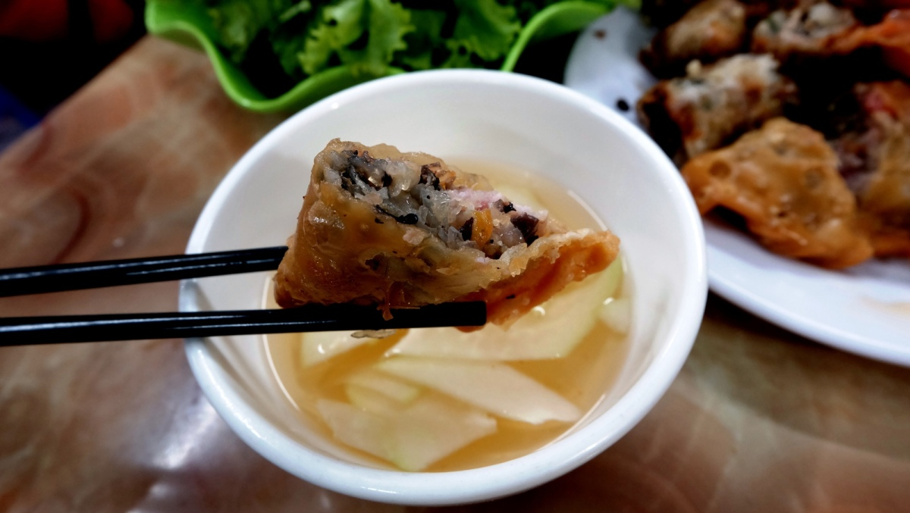
The pillow cake is my all-time favorite here, with its rich filling of minced pork, mushroom and glass noodles. The crust is smooth and thin and golden after being deep-fried.
Shrimp cake also has crunchy crust, with a peachy fried shrimp attached to each piece.
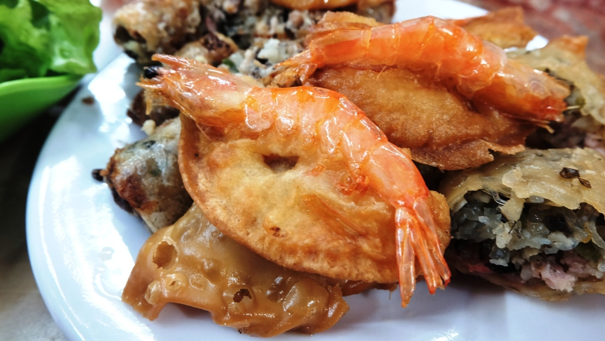
Fried crab roll, a version of the renowned spring roll, is made by rolling crab, pork, glass noodles and carrot in rice paper and frying it.
At just VND5,000-12,000 ($0.21-0.51) per cake or roll, an individual bill never touches four dollars.
The dishes here are always piping hot since the cook has half-fried cakes and rolls ready, and drops them into the oil for the final frying only after a customer places the order.
Sweet snacks - dried, seasoned fruit
Many types of dried fruits are sold in front of the shop. Photo by VnExpress/Dai Trang
Vietnamese-style dried fruit, called o mai, is another item that can be found here, at 41 Ly Quoc Su. It serves sweet pickled fruits to be taken away and munched at leisure.
Ambling across the street after a meal of fried food and eating some sour, salty fruit helps balance the greasiness and ease the stuffed feeling.
Bowls of dried fruits are placed side by side. Photo by VnExpress/Dai Trang
The fruits are stir-fried with sugar, salt or chili and salt. The fresh mango, ambarella or June plum, or dracotonmelon may be sour when fresh but makes for an appetizing snack with the addition of a little spice.
Price: VND 15,000 – 25,000 ($0.64-1.07) for 100 grams.
The renowned Pho brand
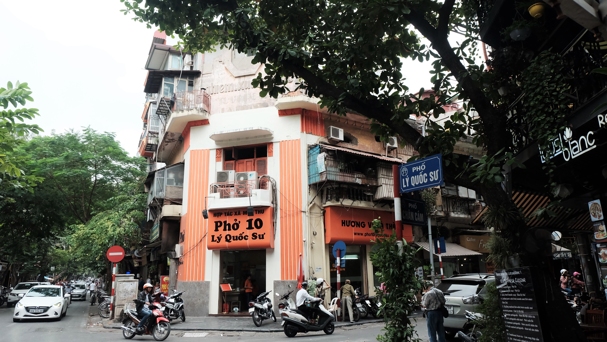
A corner of Ly Quoc Su street, in front of Pho 10 Ly Quoc Su. Photo by VnExpress/Dai Trang
Pho 10 Ly Quoc Su is one of the most famous restaurants in Vietnam serving the world famous Vietnamese rice noodles soup. During the tourist season, one can sometimes witness people queuing outside to wait for their turn to eat.
They wait because they know it is worth it. Once you sit down and place your order, the dexterous cooks quickly slice the meat, poach the noodle, add the greens and spices, and deliver the food. You can watch the performance from behind a glass wall.
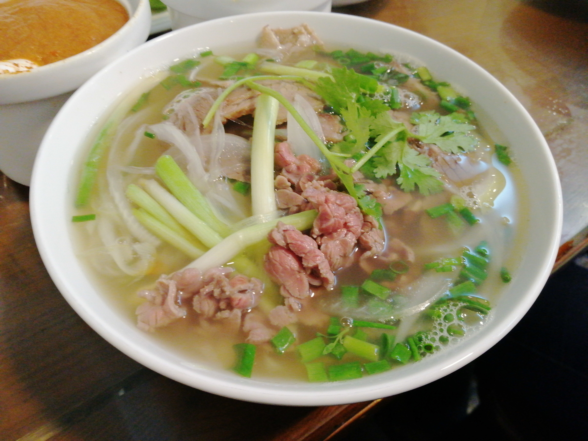
A bowl of beef pho at 10 Ly Quoc Su street, Hanoi. Photo by VnExpress/Bao Ngoc
The restaurant only serves beef pho, but the options are varied. You can have pho with cooked or poached beef flank, beef brisket or stewed beef in Bordelaise sauce.
The menu may baffle newcomers, but gourmands will enjoy customizing their bowl of pho with various cuts of beef, spices and quay (fried breadstick).
Price: VND55,000 – 80,000 ($2.35 – 3.45) for a bowl.
Pork’s rib congee
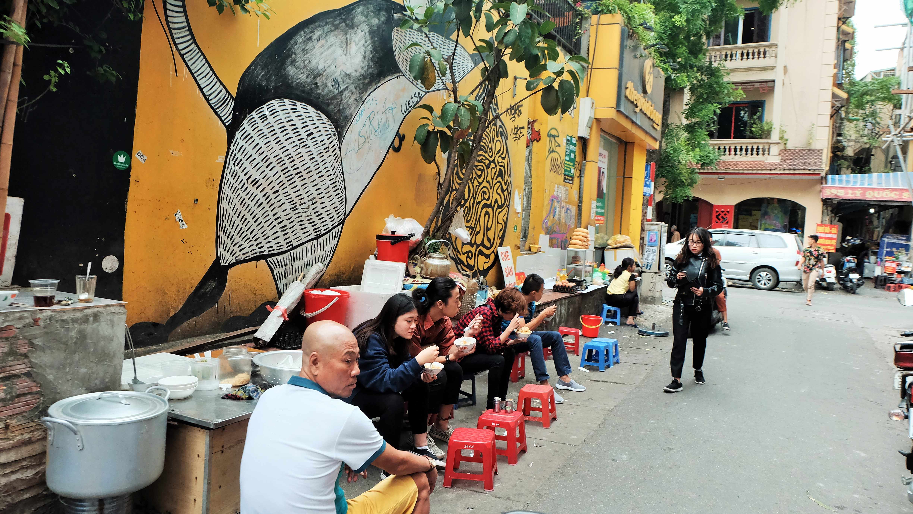
If all the previous places served food under a roof, this dish retains fully its street-food character. At the junction of Ngo Huyen alley and Ly Quoc Su street are several pork rib congee stalls. The cooks place their congee pots on one side of the narrow alley, and place other cooking tools on a slab of concrete protruding from a wall.
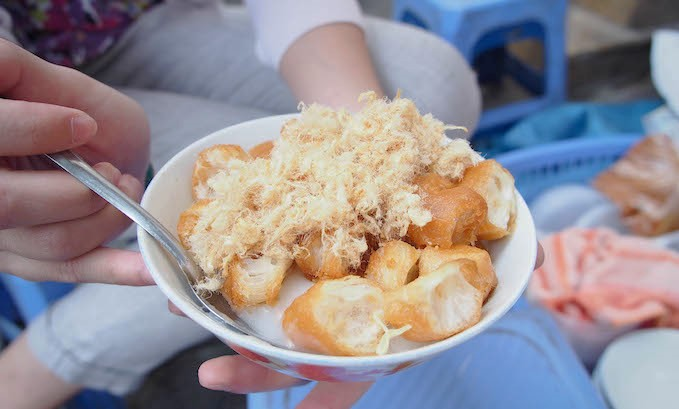
La's bowl of chao suon costs less than a dollar. Photo by VnExpress/Trang Bui
Cassava sweet soup is cooked with cassava, cassava powder, coconut water, coconut rice and ginger. The soup is transparent with a thick texture. The brownish yellow soup covers the soft and light cassava cubes. The spicy ginger slices add warmth to the dish. The crowd will testify that this is a great dessert for a cool day.
Price: VND20,000 ($0.85) for a bowl of pork’s rib congee and VND15,000 ($0.65) for a bowl of cassava sweet soup.
Cathedral Lemon teae
Ask a Vietnamese youth for a list of calm experiences in Hanoi, and he or she is most likely would mention having a iced lemon tea by the Cathedral.
Young and not so young people flock to the square in front of St. Joseph Cathedral Hanoi for a place to meet up, chit chat, watch people walking around or simply reflect on their day.
It is relaxing just to sit down on a red or blue plastic chair and place your drink on another. "Tra Chanh Nha Tho", meaning Cathedral lemon tea in English, has become a signature experience at the beginning of Ly Quoc Su street.
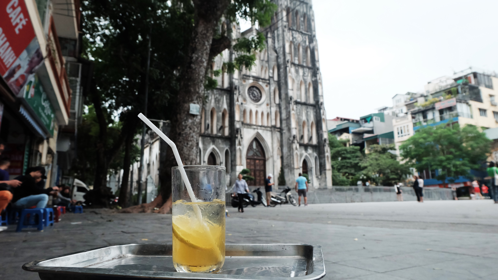
A glass of lemon tea served outside of St. Joseph Cathedral square. Photo by VnExpress/Dai Trang
I stopped my bike near a sidewalk in front of the cathedral square. A man promptly walked towards to walk my bike away, and pointed me to a seat.
The business was going strong, I could tell. They were professionally efficient in everything they did.
From where I sat, I heard Korean, English and French mixed into Vietnamese words. Though I could not make out what anyone said, the tone was a happy tone.
As I finished yet another food journey in the cathedral area, I was filled happiness again to be a Hanoian.